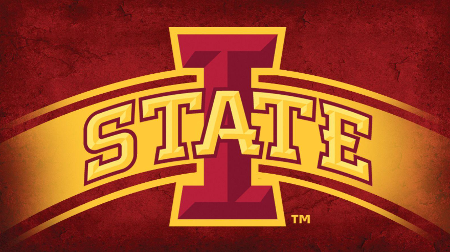

My educational background and academic involvements
Major: Computer Science
Minors: Data Science, Applied AI
GPA: 3.85

As the backend lead, I will contribute to the development of AI and machine learning projects this upcoming spring.
Learn more about the clubIssued: 2024
View Certificate